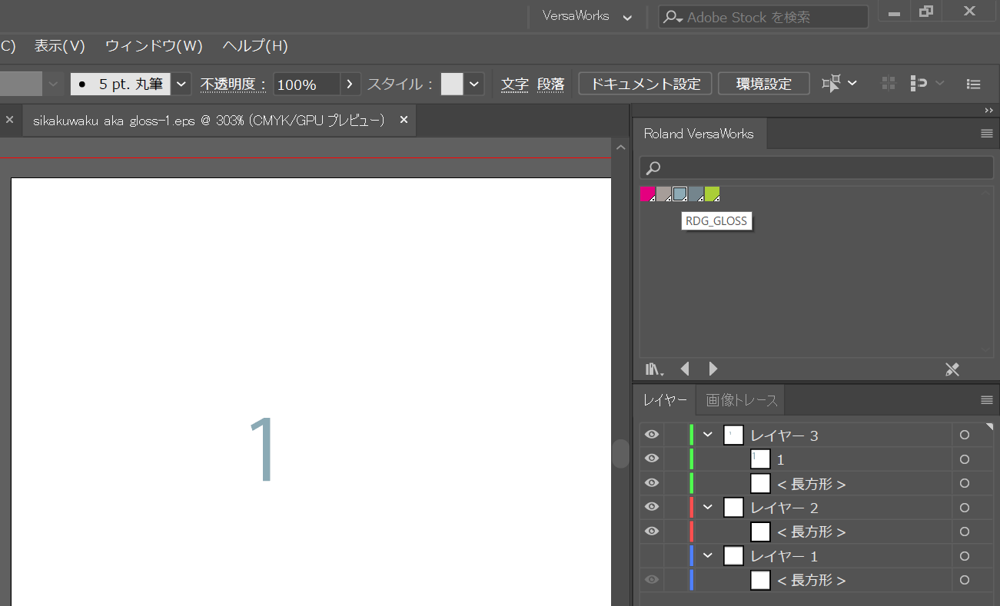

UVプリンターと普段の印刷機の違いとは「重ね塗り」が出来る点である。
今回は、この重ね塗りをした時の色の変化について考察する。
実験１：メディア＝MDF
単色に対して濃い色（今回：黒）を重ね塗りした場合の色の反映
単色：青↑に対して黒↓のグラデーション
.png)
１．最も薄いと考えられる右部分に対しては大きな色の変化はなし（無色なので当然）
２．中央部から右にかけて色の変化、特に最も暗い左部分に対して色がドス黒い色になっている。
３．使用した色が青と黒のため、色の変化というよりは若干の黒化のようになった。
４．黒と青を混ぜると紺色だが、いまいち確認しづらい
・濃い色（黒）は若干のグラデーションで後ろの色を反映する
・薄い色（青）はメディアの色を反映してしまうのではないだろうか
ケース１のことからUVプリンターは下の色を反映することが分かった。
今回は同じ色を重ね塗りした場合の変化を考察する。
単色（今回：青）のグラデーションを1回目、5回目、10回目と繰り返した時の変化を見る。
変化をわかり安するため、使用する色はかなり薄い色から始める。
.png)
.png)
.png)
１．重ね塗りを繰り返すごとに色が濃くなった（右から左へと変化）
２．ほぼ無色だと思われた部分にもしっかりと色があった（1と５回目の中央部）
３．重ね塗りをすると色合いは濃くなり、手触りは光沢？が増す
・単色のみで重ね塗りをする場合は色が濃くなることを考慮する必要がある。
・5回目以降から色の変化が著しい
ケース１のときにメディアの汚れ（テープ）があり印刷時に黒ズミのようなものが移ってしまった。
ケース2から分かるようにUVプリンターは後ろの色も反映する。
このことから、今回はメディアに対し色を塗ったときの印刷結果を考察する。
ディアに色ペン（赤・青・緑色）を塗り、UVプリンターで単色（赤・緑・黄色）を重ね塗りをして変化を考察する。

.png)
.png)
.png)
.png)
１．全色に対して色が変化（混ぜ合わさる）ことはなかった。
２．濃い色（赤、緑色）に比べ、黄色は後ろの反映が大きい
３．同色同士なら気にならない浮き出方気がする…
・UVプリンターのイメージはコーティング
・単色のみの印刷ならメディアの状態を気にする必要がある。
ケース1．2.3からUVプリンターがメディアの色を反映してしまうことが分かる。
これを対処するために印刷をする前に「白色」を塗る方法がある。
今回はメディアに文字を書き下地に「白」を塗って印刷する。
1．イラストレーターのデータから色の選択していく
2．「Roland VersaWorks」>RDG_WHITEを選択（灰色になります）>EPSで保存
3．「VersaWorks」のジョブリストから設定を選択
4．品質>モードからWhiteを選択（ファイル情報に赤い線が入ります）

5．印刷：終了
・初期のメディア＋色ペン「テスト」
.png)
.png)
.png)
.png)
・1回目の塗りでは下の文字が反映したが5回目には真っ白になった。
・ただ塗るよりも鮮やかに印刷できる。
・メディアに対してきれいに印刷する場合には「白色」を先に印刷する。
設定>モード>White>CMYK
重ね塗りで浮き出るような印刷をする場合、単色を重ね塗りをすると色が変化してしまう
なので透明なインクを無理重ねることで「手触り」のある印刷を目指す。
１．デザインの色の設定をRDG_GlOSSに変更（ネズミ色？になります）
２．品質＞一般から特殊仕上げに変更
３。モードから印刷の種類を選択する
・GlossVarnish：光沢仕上げ
・MatteVarnish：マット仕上げ
・Embossing：厚盛仕上げ
印刷：終了
.png)
透明な印刷なのでグロスのみで柄等を印刷する場合は認識するの難しいを思う
しかし、確実に色の変化を与えずに「手触り」を再現できると思う